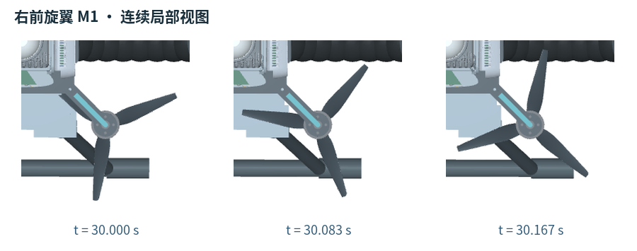
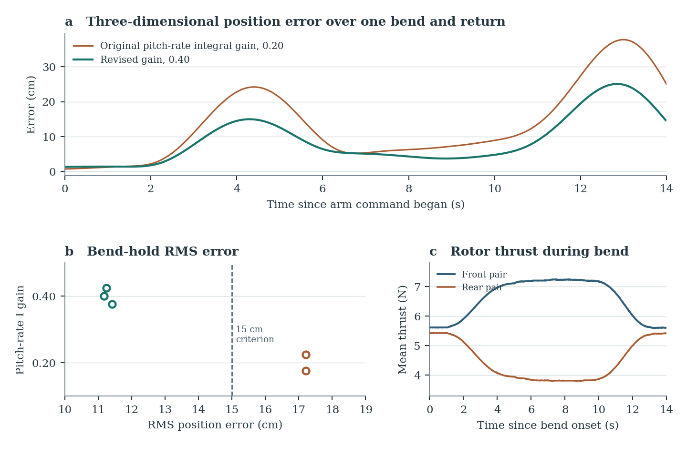

F · 旋翼回放修订 / 2026-11-19 00:06（北京时间）
从四路电机推力看螺旋桨转动
同一次 F 轮飞行。四副原始 SUPER 桨叶在各自电机轴上转动，俯视可分辨相反的旋向。30 s 时前两台约 7.2 N，后两台约 3.8 N。
模型与场景

01右前桨连续三帧
同一飞行的 30.000、30.083 和 30.167 s。桨绕右前电机轴旋转，机臂可作为固定参照。

曲线与机制图

01位置误差与前后旋翼推力
F 轮原始验收曲线。图 c 的前、后推力是对应两台电机的平均值，视频分别显示四路瞬时数值。

视频回放
01四旋翼与推力同步回放
从释放前 4 秒开始。中央俯视图可辨识两组对角桨的反向旋转，右侧给出各电机的模拟推力，底部同步显示臂角。
论文与报告
本次飞行的两页验收图
与 F 轮引用同一份 PDF，展示空场任务和俯仰增益配对。
数据及运行记录
桨轴、旋向与画面校验
包含 CAD 来源哈希、四桨三角面数量、两组旋向、零推力静止与同姿态有推力时的逐桨像素校验。
逐帧推力与示意桨相位
517 帧。包括视频时间、原始机身姿态和输出时间戳、四路推力 N 以及仅用于显示的相位 rad。